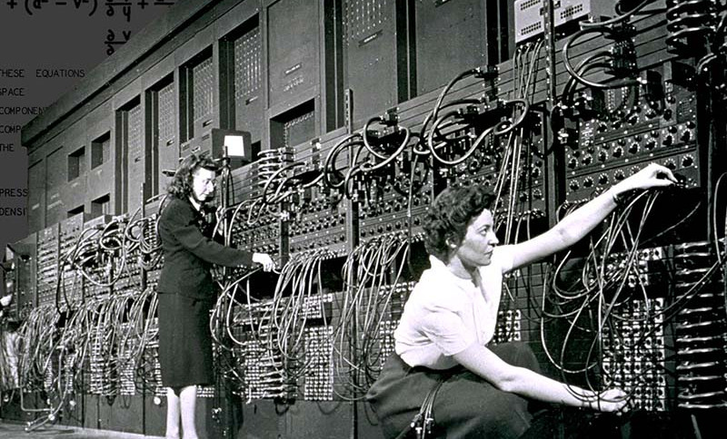

Dentre os assuntos que mais suscitam curiosidades no campo da tecnologia indubitavelmente é o surgimento das primeiras máquinas(computadores), este é de longe, um dos tópicos mais requisitados. Por isso gosto de tratar sobre esse assunto, trazendo um paralelo entre a sua origem e o que temos hoje de mais moderno em dispositivos e tecnologias digitais.
Pois bem, o interessante é que os primeiros computadores eram muito limitados em relação ao processamento e transmissão de dados, para se ter uma ideia, eles ocupavam espaços físicos enormes de salas inteiras de até 167m², pesavam até 27 toneladas e consumiam muita energia. Isso acontecia porque utilizavam válvulas e tambores magnéticos. As válvulas eram enormes e queimavam com facilidade, não obstante informações que o homem levava horas para processar como um cálculo balístico, o computador ENIAC(Electronic Numerical Integrator and Computer) levava apenas 30 minutos. A linguagem de programação era (machine language) processando um operação por vez e entrada e saída via cartões perfurados.
Em seguida, surgiram os computadores de segunda geração, gostei de saber a história dos transistores, pequenos dispositivos que substituíram as válvulas e causaram uma revolução no desenvolvimento de novos computadores, pois consumiam menos energia, dissipam menos energia e eram bem mais resistentes que as válvulas e eram bem menores. Estas vantagens possibilitaram um aumento de eficiência, diminuição do consumo e tamanho das máquinas. Além disso, surgiram novas linguagens de programação de mais alto nível como COBOL e FORTRAN, cujas instruções de software foram implementadas com linguagem mais próximas às que os humanos usariam para definir instruções para o computador. À medida que se desenvolvia tecnologicamente, avanços significativos ocorreram nos transistores, achei interessante demais saber que estes dispositivos puderam ser ainda mais miniaturizados, esta micro redução deu origem aos circuitos integrados, que são na verdade, pequenas placas de silício que absorvem estes transistores reduzidos. Tais eventos possibilitaram uma aceleração na execução de vários programas, controles de contas, hardware, por conseguinte, Sistemas Operacionais mais robustos para gerenciar esta nova gama de informações.
O advento dos microprocessadores foi, para mim, um dos pontos cruciais nesse “boom” de desenvolvimento, isto porque neste componente puderam ser aglutinados a CPU, memória e conectores com a placa mãe. Com os microprocessadores houve a consecução de novos computadores personalizados para uso doméstico como o IBM-PC. A partir disso, essa multiplicação e facilidade na aquisição de computadores com alto poder de performance, fluxo intenso de informações, novas formas de conectá-los pavimentou-se o caminho para criação de redes de computadores e a internet. Surgiram, então, microprocessadores de vários núcleos, aumentando a capacidade de cada máquina. Concluindo, essa mesclagem de microprocessadores com novos dispositivos integrados à internet mudou o status quo da sociedade moderna e das suas relações sociais e de trabalho.
Chegando aos nossos dias modernos, vivemos e “respiramos” Inteligência Artificial, que sou suspeito em falar sobre, pois tenho afinidade nesta área, gosto da parte de machine learning e suas relações com marketing e vendas. IA trata de viabilizar mais autonomia aos dispositivos para que eles possam tomar decisões baseadas em algoritmos para aprendizagem de máquina por exemplo: Descoberta rotas de GPS, reconhecimento facial e por voz, entendimento linguagem natural.
| CARACTERÍSTICAS | 1ª GERAÇÃO: VÁVULAS | 2ª GERAÇÃO: TRANSISTORES | 3ª GERAÇÃO: CIRCUITOS INTEGRADOS | 4ª GERAÇÃO: MICROPROCESSADORES | 5ª GERAÇÃO: INTELIGÊNCIA ARTIFICIAL |
|---|---|---|---|---|---|
| CIRCUITO | Válvulas termiônicas | Transistor | Circuito integrado - CI/Chips | Microprocesssador - Microprocesssador Multinúcleo | Microprocesssador Multinúcleo e chiplet |
| MEMÓRIA | Tambores Magnéticos | Memória interna | Rom, Prom, Ram, Eprom, Eeprom | Rom, Prom, Eprom, Eeprom, Ram, Dram, Sram, Registrador, cache | Rom, Prom, Eprom, Eeprom, Ram, Dram, Sram, Registrador, cache |
| TAMANHO | Grande | Pequeno | Pequeno | Pequeno | Pequeno |
Neste capítulo 6, o tema trata-se de um assunto muito relevante, aborda redes de computadores, é um tópico que me fascina pela riqueza de possibilidades pelos quais os dispositivos podem se comunicar mutuamente. Na primeira abordagem, fala que um computador isolado traz benefícios limitados se comparados aos ganhos provenientes de um computador numa rede. Além disso, a apostila traz de maneira cabal uma realidade que não tenho como discordar, a de que existem diversos serviços que só funcionam dentro de uma rede de computadores, podemos citar: E-mail, jogos on-line, streaming e chats são alguns elencados. Posso acrescentar outras opções que são bastante chamativas para mim, no que diz respeito a possibilidades diversas do uso de redes de computadores, a Iot(Internet das Coisas) por exemplo, este tópico foi ligeiramente pincelado neste párágrafo, hoje já é possível conectar dispositivos como smartwatches, porta retratos, geladeiras, TV's, máquinas de lavar, controlados por um smartphone por exemplo.
Uma parte que achei o máximo foi a classificação das redes de acordo com a sua dimensão, você entender como a internet que você acessa chega até sua casa é uma pergunta que todo mundo já deve ter se feito. O porque ela é "lenta", Por que o fornecimento de internet é cortado quando um provedor tem problemas com a última milha? São muitas questões que são explicadas quando se sabe o "caminho" que a internet percorre até o usuário final. E você saber em qual categoria sua internet se encaixa pode te ajudar a entender o porque dos gargalos e o porque dos benefícios que você percebe em relação a outros provedores no mercado.
| CARACTERÍSTICAS | REDE LAN | REDE MAN | REDE WAN |
|---|---|---|---|
| ABRANGÊNCIA | REDE LOCAL, PEQUENA, ~1KM | MÉDIA, DEZENAS DE KM's | ALTA, CENTENA DE KM's |
| TAXA TRANSFERÊNCIA DE DADOS | ALTA | PEQUENA | PEQUENA |
| EXEMPLO | LAN EMPRESA, UNIVERSIDADE, REDE DOMÉSTICA | PROVEDOR DE INTERNET DE UMA CIDADE | RNP-REDE NACIONAL DE PESQUISA E ENSINO |
Este tipo de tecnologia é a forma como os computadores ou dispositivos são conectados na rede. Os mais populares são a topologia barramento e estrela.
Nesse tipo de topologia, todos os dispositivos são conectados pelo mesmo barramento/cabo. E este varia de acordo com o tipo, modelo, como os seguintes:
Cabo de par trançado:
Este tipo de cabo é bem flexível e é utilizado em redes locais(Ethernet)cabeadas(LAN). São bastante populares pela cor azul, ganhou o apelido de cabo RJ, que é nome de seu conector. É um cabo entrelaçado para evitar interferências eletromagnéticas e possuem alcance pequeno de transmissão. Mas possui menos interferências e possuem boa capacidade de transmissão.
Cabo coaxial:
Este tipo de cabo possui uma característica interessante, já observei que nas TV's por assinatura eles tem um cabo diferente, ele é mais espesso e parece mais resistente, mas é exatamente o cabo utilizado. O cabo coaxial tem por vantagens ser feito de cobre e possuir uma blindagem extra de proteção com poucas interferências, alta velocidade de transmissão, uma desantagem é não ser muito flexível.
Cabo fibra ótica:
A fibra ótica para mim é um assunto rico e envolvente. O que me faz gostar da fibra é o modo pela qual ela transmite dos dados, na velocidade da luz, ela converte sinais elétricos em sinais luminosos que são transportados por reflexão sem interferências por longas distâncias. As WAN's a utilizam frequentemente pelas características relatadas. A sua rápida velocidade de transmissão permite acesso ágil a streams, jogos, vídeos etc.
E por fim, falar sobre a topologia estrela também é interessante, porque traz à tona forma como funcionava antigamente os terminais "burros" com uma maquina central que recebia e envia os dados das máquinas conectadas à rede. Hoje as redes sem fio utilizam essa estratégia fazendo do swicth o ponto de acesso. Então é muito relevante saber que hoje em dia nós utilizamos uma determinada topologia de rede e sem saber antes como funcionava.